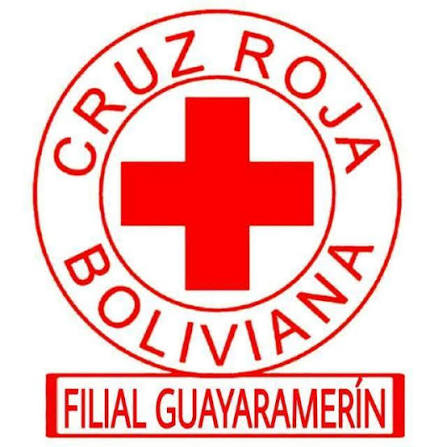
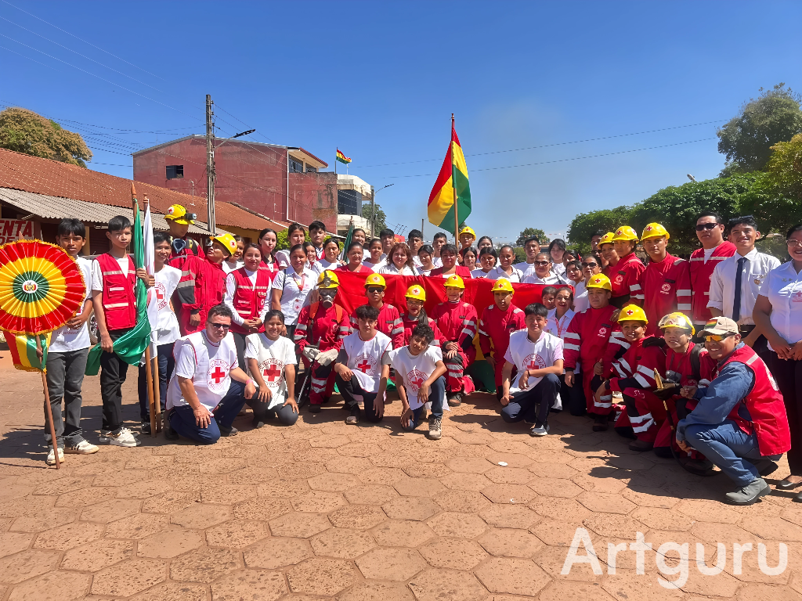
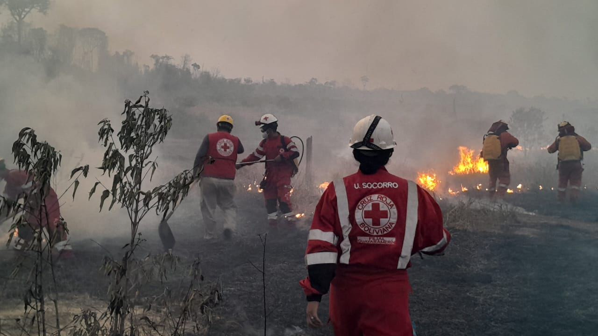
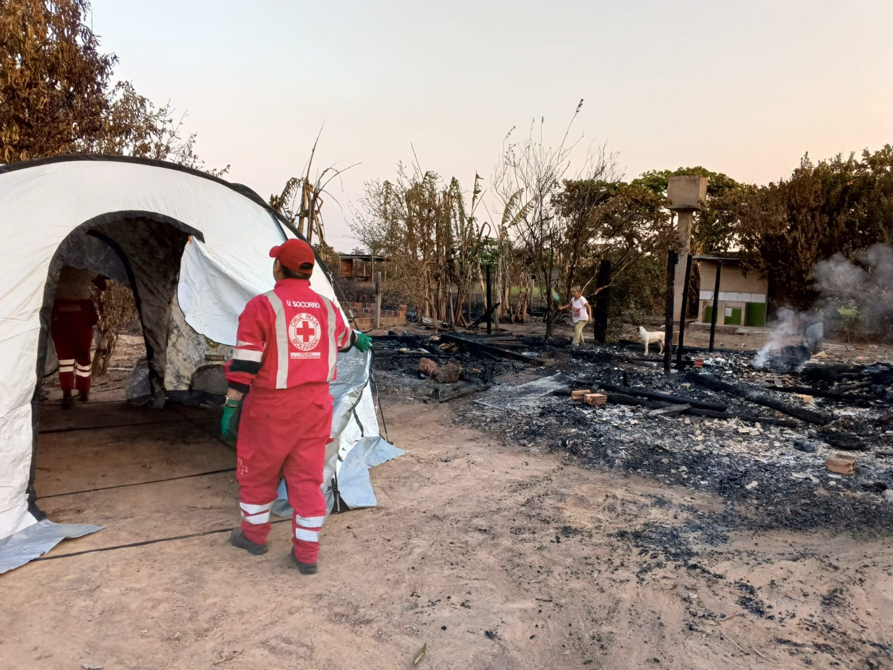

1. Registro
Las personas interesadas pueden registrar sus datos para participar en una convocatoria institucional.

Sistema de Incorporación y Vinculación Institucional
Cruz Roja Boliviana - Filial GuayaramerínSIVIC es una plataforma diseñada para facilitar la incorporación de nuevos voluntarios a la Cruz Roja Boliviana Filial Guayaramerín.
Conocer el procesoEl sistema permite organizar y acompañar cada etapa del ingreso de nuevos voluntarios.
Las personas interesadas pueden registrar sus datos para participar en una convocatoria institucional.
Los participantes reciben capacitaciones orientadas al trabajo humanitario y voluntariado.
Luego de completar el proceso inicial, pueden continuar su camino dentro de la institución.
La Cruz Roja desarrolla actividades humanitarias, educativas y de apoyo comunitario.



Si deseas formar parte del voluntariado o conocer más sobre el proceso de incorporación, puedes enviarnos un mensaje.